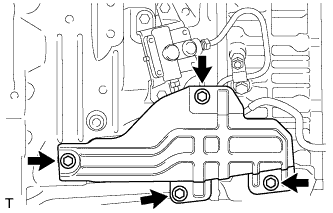

ГИДРОАККУМУЛЯТОР ПРИВОДА СЦЕПЛЕНИЯ (для моделей с левосторонним рулевым управлением) > СНЯТИЕ |
| 1. СЛЕЙТЕ ТОРМОЗНУЮ ЖИДКОСТЬ ИЗ ТРУБОПРОВОДА ПРИВОДА СЦЕПЛЕНИЯ |
| 2. СНИМИТЕ ПЕРЕДНИЙ КАРДАННЫЙ ВАЛ В СБОРЕ (для моделей с 1GR-FE) |
Снимите передний карданный вал (Нажмите здесь).
| 3. СНИМИТЕ КОЖУХ КАРТЕРА СЦЕПЛЕНИЯ № 1 (для моделей с 1GR-FE) |
|  |
Выверните 4 болта и снимите крышку картера.
| 4. СНИМИТЕ ГИДРОАККУМУЛЯТОР ПРИВОДА СЦЕПЛЕНИЯ В СБОРЕ |
Для моделей с 1GR-FE:
Снимите трубопровод от рабочего цилиндра сцепления к гидроаккумулятору (Нажмите здесь).
С помощью разрезной головки отсоедините трубопровод, соединяющий рабочий цилиндр сцепления с гибким шлангом.
Отверните гайку.
Выверните 3 болта и снимите гидроаккумулятор привода сцепления.
За исключением моделей с 1GR-FE:
 |
С помощью разрезной головки отсоедините трубопровод, соединяющий главный цилиндр сцепления с гибким шлангом.
С помощью разрезной головки отсоедините трубопровод между гидроаккумулятором и гибким шлангом.
Отверните 3 гайки и снимите гидроаккумулятор привода сцепления.